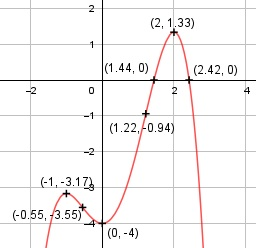

Aufgabe 55 f(x) = - 0,5x4 + (2/3)x3 + 2x2 - 4 f'(x) = - 2x3 + 2x2 + 4x, f''(x) = 6x2 + 4x + 4, f'''(x) = 12x + 4 Definitionsbereich: -∞ < x < ∞ Wertebereich: -∞ < f(x) ≤ 1,33 (siehe Extrempunkte) Asymptoten: - Symmetrie: - Nullstellen: -0,5x4 + (2/3)x3 + 2x2 - 4 = 0 Keine ganzzahligen Nullstellen. Wertetabelle: x -1 0 1 2 3 y -3,17 -4 -1,83 1,33 -8,5 Vorzeichenwechsel zwischen 1 und 2 --> Nullstelle x(x01) = 1,5 am Graphen abgelesen Vorzeichenwechsel zwischen 2 und 3 --> Nullstelle x(x02) = 2,4 am Graphen abgelesen Newtonsches Näherungsverfahren: f(x0) x1 = x0 - -------- f'(x0) -0,5*1,54 + (2/3)*1,53 + 2*1,52 - 4 x1 = 1,5 - ------------------------------------- -2 * 1,53 + 2 * 1,52 + 4 * 1,5 x1 = 1,5 - 0,06 = 1,44 -0,5*2,44 + (2/3)*2,43 + 2*2,42 - 4 x2 = 2,4 - ------------------------------------- -2 * 2,43 + 2 * 2,42 + 4 * 2,4 x2 = 2,4 - (-0,02) = 2,42 N1(1,44|0), N2(2,42|0) keine weiteren Nullstellen, siehe Extrempunkte. Schnittpunkt mit der y-Achse: f(0) = -0,5 * 04 + (2/3) * 03 +2 * 02 - 4 = -4 Sy(0|-4) Extrempunkte: - 2x3 + 2x2 + 4x = 0 -2x * (x2 - x - 2) = 0 -2x = 0 |:(-2) x1 = 0, f(0) = -4 x2 - x - 2 = 0 p, q - Formel: p = -1, q = -2 x2,3 = x2,3 = 0,5 ± x2,3 = 0,5 ± x2,3 = 0,5 ± 1,5 x2 = 2 f(2) = - 0,5*24 + (2/3)*23 + 2*22 - 4 = 1,33 x3 = - 1 f(-1) = -0,5*(-1)4 + (2/3)*(-1)3 + 2*(-1)2 - 4 f(-1) = -3,17 f''(0) = - 6 * 02 + 4 * 0 + 4 > 0 --> Tiefpunkt (0|-4) f''(2) = - 6 * 22 + 4 * 2 + 4 < 0 --> Hochpunkt (2|1,33) f''(-1) = - 6 * (-1)2 + 4 * (-1) + 4 < 0 --> Hochpunkt (-1|-3,17) Wendepunkt: -6x2 + 4x + 4 = 0 A, B, C - Formel: A = -6, B = 4, C = 4 x1,2 = x1,2 = x1,2 = -4 ± 10,6 x1,2 = ------------ -12 x1 = -0,55 f(-0,55) = -0,5 * (-0,55)4 + (2/3) * (-0,55)3 + + 2 * (-0,55)2 - 4 = -3,55 x2 = 1,22 f(1,22) = -0,5 * (1,22)4 + (2/3) * (1,22)3 + + 2 * (1,22)2 - 4 = -0,94 f'''(-0,55) = -12 * (-0,55) + 4 ≠ 0 --> Wendepunkt (-0,55|-3,55) f'''(1,22) = -12 * 1,222 + 4 ≠ 0 --> Wendepunkt (1,22|-0,94) Graph:
